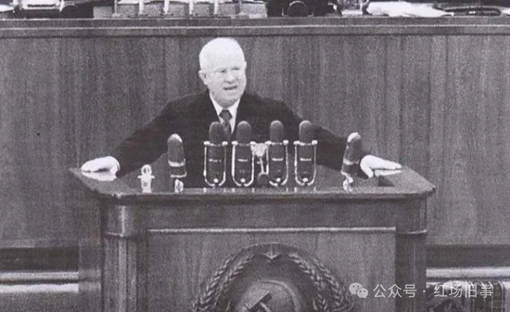
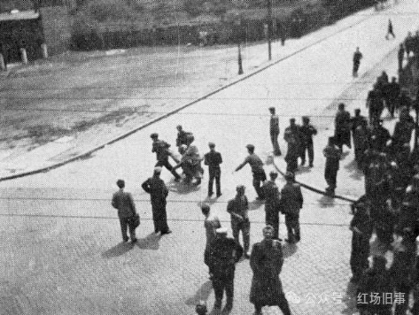
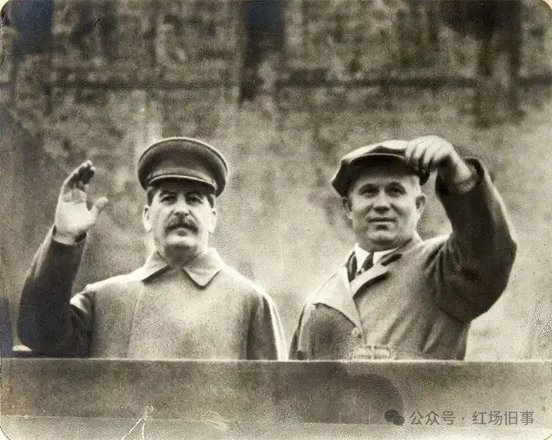

“揭了盖子，也捅了娄子”：1956年秘密报告如何改变世界格局？
文字与图片版权归各自权利人所有。 查看公众号原文 ↗
秘密报告：赫鲁晓夫“去斯大林化”，震动世界1956年2月25日凌晨，莫斯科克里姆林宫大厅里，气氛紧张得让人窒息。苏共二十大已经接近尾声，代表们正准备收拾行装返回各地。突然接到通知：深夜召开秘密会议，不得缺席，不得记录，不得外传。赫鲁晓夫走上讲台，手里拿着一份厚厚的稿子。接下来的四个半小时，他的话像一颗炸弹，投向在场的每一个代表，并很快引爆整个世界。

“斯大林同志当上总书记后，掌握了无限的权力……他滥用职权，大规模镇压……”报告厅里鸦雀无声。有人低下头，有人捂住脸，有人泪流满面。三十年来被奉为神明的斯大林，在这一夜被拉下了神坛。这就是后来震动世界的“秘密报告”——《关于个人崇拜及其后果》。
一、报告说了什么？赫鲁晓夫的秘密报告不是全盘否定斯大林的功绩。他在开场白中明确说：“斯大林的功绩是尽人皆知的”。报告的核心，是对个人崇拜的批判。赫鲁晓夫引用马克思的话：“由于厌恶一切个人迷信，我从来都不想公布那些歌功颂德的东西。”他引用列宁的“遗嘱”：列宁曾建议把斯大林从总书记位置上调开，因为“斯大林粗暴，在总书记职位上不可容忍”。报告揭露了大量事实：大规模镇压、滥用职权、破坏法制、战争初期的指挥失误……赫鲁晓夫说：“斯大林根本不允许实现集体领导，他不仅对反对他的人施加暴力，而且对被他看成与他的思想相违背的人，也要施以暴力。”报告的结论是：必须坚决地、一劳永逸地消灭个人崇拜，恢复集体领导原则，恢复社会主义法制。
二、国内震动：解冻与混乱秘密报告在苏联国内引发巨大反响。一方面，它带来了“解冻”。1954年爱伦堡的小说《解冻》恰好成为这个时期的象征。人们开始谈论过去不敢谈论的话题，大量政治犯获得平反，审查制度有所放松。“解冻”一词被广泛用来形容这个充满希望又充满不确定的时期。另一方面，混乱也随之而来。许多人对三十年来信奉的“真理”产生怀疑。一些地方出现骚乱，格鲁吉亚——斯大林的故乡——甚至有民众上街抗议。报告传达的步骤之乱、范围之广、速度之快，都脱离了人们的接受能力。赫鲁晓夫后来承认：“我们当时没有做好充分的思想准备和组织准备。”
三、东欧动荡：危险的令人陶醉的酒秘密报告传到东欧后，引发连锁反应。英国学者形容这是“危险的令人陶醉的酒”。东欧国家长期被强制推行苏联模式，压抑已久的不满情绪被点燃。1956年6月，波兰波兹南爆发工人抗议，演变成流血冲突。最终，苏联被迫让步，允许哥穆尔卡上台，推行“通往社会主义的波兰道路”。

更严重的是匈牙利。10月，布达佩斯民众走上街头，最初只是支持波兰的示威，很快演变成要求自由和独立的革命。纳吉·伊姆雷上台后宣布退出华沙条约，要求苏联撤军。苏联的回应是铁腕镇压。11月4日，20万苏军和4000辆坦克开进布达佩斯，经过五天激战，革命被镇压，约25000名匈牙利人丧生。匈牙利事件表明：去斯大林化是有边界的——不能挑战党的领导，不能退出华约体系。
四、中苏裂痕的起点秘密报告也深深影响了远在东方的中国。毛泽东得知报告内容后，做出了一个后来被反复引用的评价：“一是揭了盖子，一是捅了娄子。”“揭了盖子”，是指报告破除了对苏联和斯大林的迷信。毛泽东说：“这就破除了迷信，今后我们不要再硬搬苏联的一切了，应该用自己的头脑思索了。”“捅了娄子”，是指报告的方式和时机有问题。毛泽东批评道：“搞突然袭击，不仅各国党没有思想准备，苏联党也没有思想准备。这么大的事情，这么重要的国际人物，不同各国党商量是不对的。”1956年4月，中共发表《关于无产阶级专政的历史经验》，肯定了斯大林的功绩，同时指出他的错误。这篇文章表明：中国共产党要走自己的路，不盲从苏联的指挥棒。此后，中苏两党在斯大林评价、和平过渡、与南斯拉夫关系等问题上分歧逐渐加深，最终导致60年代的大论战和分裂。可以说，苏共二十大和秘密报告，是中苏裂痕的真正起点。
五、改革的开始，也是意识形态崩塌的开始从积极面看，秘密报告开启了改革之门。赫鲁晓夫随后推行一系列政策：释放数百万政治犯、恢复被清洗者的名誉、放宽文化限制、调整农业政策、改善与西方国家关系。这是苏联历史上第一次自上而下的“解冻”。但从消极面看，报告也动摇了意识形态根基。三十年来，苏联民众被教育：党永远正确，领袖永远正确，社会主义道路永远正确。突然有一天，最高领导人告诉大家：那个神一样的领袖，是个滥杀无辜的暴君。人们不禁要问：如果斯大林错了，那么那些年我们信奉的是什么？如果领袖会犯如此严重的错误，那么现在的领袖会不会也在犯错？这种怀疑一旦产生，就很难消除。秘密报告在揭发罪行的同时，也打开了意识形态崩塌的闸门。赫鲁晓夫后来在回忆录中写道：“我们当时没有意识到，有些事情一旦开始，就无法控制。”
六、历史的回响1961年，苏共二十二大进一步批判斯大林，斯大林的遗体被移出列宁墓，葬在克里姆林宫墙下。以斯大林命名的城市、街道、工厂纷纷改名。

但去斯大林化从未彻底完成。勃列日涅夫时期，批判斯大林成为禁区；戈尔巴乔夫时期，重新掀起批判浪潮。每一次批判都与当时的政治需要紧密相连。1991年苏联解体后，关于斯大林的争论仍在继续。有人视他为暴君，有人视他为强国领袖。历史评价从来不是简单的对错，而是复杂时代中的复杂投影。
结语：那个夜晚的回声1956年2月25日凌晨，赫鲁晓夫在秘密报告的最后说：“我们必须坚决地、一劳永逸地消灭个人崇拜。我们绝对相信，用第二十次代表大会历史性决议武装起来的党，必将领导苏联人民沿着列宁主义的道路走向新的胜利。”

全场起立，暴风雨般的掌声持续了数分钟。然而，历史的发展往往超出演讲者的预期。那条“列宁主义的道路”最终通向何方，是赫鲁晓夫无法预料的。那个夜晚的回声，穿越了国界，穿越了年代，至今仍在历史的走廊里回荡。它提醒后来者：当神话被打破，当偶像被推倒，留下的不仅是真相的碎片，还有整个时代都难以填补的精神空洞。
秘密报告震动了世界。而世界的余震，至今尚未完全平息。